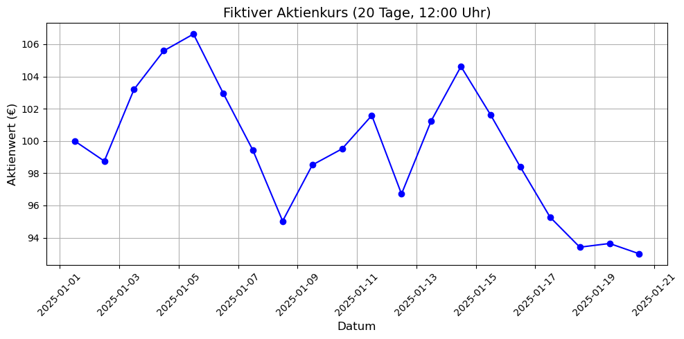

4. pandas und matplotlib#
Da wir nun die beiden Bibliotheken importiert haben, können wir mit ihnen arbeiten. Mit pandas kann man Daten in eine tabellarische Form, einen sog. DataFrame umwandeln und analysieren und anschließend mit matplotlib visualisieren.#
Beispielhaft könnte das so aussehen:#
#Als erstes importieren wir pandas und matplotlib
import pandas as pd
import matplotlib.pyplot as plt
#Zunächst erstellen wir drei Listen mit gleich vielen Elementen - eine für Namen, eine für Alter und eine für Hobbies
#Jede Position in den Listen gehört logisch zusammen (z.B. Name, Alter und Hobby einer bestimmten Person)
#Der Einfachheit halber verwenden wir die Listen, die wir bereits erstellt haben:
names = ["Alex", "Giselle", "Can", "Amber", "Friedrich"]
age = [24, 23, 26, 21, 29]
hobby = ["Gaming", "Fußball", "Fußball", "Singen", "Lesen"]
#Nun bündeln wir die Listen in einem Dictionary - erstellen also Schlüssel-Wert-Paare. D.h. unser Dictionary besteht aus mehreren Listen,
#denen ein Schlüssel zugeordnet wird:
data = {"Name": names, "Alter": age, "Hobby": hobby}
#Jetzt können wir mit pandas einen DataFrane ersellen - eine tabellarische Struktur (ähnlich wie Excel)
#Die Spalten ergeben sich dabei aus den Schlüssel-Wert-Paaren:
df = pd.DataFrame(data)
#Jetzt lassen wir uns den DataFrame (df) ausgeben, das geht mit print(df) oder einfach mit "df"
df
| Name | Alter | Hobby | |
|---|---|---|---|
| 0 | Alex | 24 | Gaming |
| 1 | Giselle | 23 | Fußball |
| 2 | Can | 26 | Fußball |
| 3 | Amber | 21 | Singen |
| 4 | Friedrich | 29 | Lesen |
Nun sind unsere Daten in einer sauberen tabellarischen Form unter der Variablen df abgespeichert#
Man könnte nun z.B. die Funktion sort_values() von pandas verwenden, um die Daten nach den Werten einer bestimmten Spalte zu sortieren. In diesem Fall nehmen wir das Alter und lassen es absteigend sortieren:#
df_sorted = df.sort_values(by="Alter", ascending=False)
by=”Alter” gibt an, aus welcher Spalte die Werte zur Sortierung entnommen werden sollen, ascending=False kehrt die Sortierung (ascending - aufsteigend) um, sodass das Alter absteigend sortiert wird. ascending=True würde die Werte aufsteigend sortieren. mit der Erstellung der neuen Variable df_sorted haben wir einen neuen DataFrame erstellt. Hätten wir einfach wieder die Variable df verwendet, hätten wir unseren ersten DataFrame überschrieben. Es ist wichtig, das im Hinterkopf zu behalten, um den ursprünglichen DataFrame oder bestimmte berarbeitete DataFrames zu erhalten, sofern das relevant für die eigene Datenverarbeitung ist. Unser neuer DataFrame sieht nun so aus:#
df_sorted
| Name | Alter | Hobby | |
|---|---|---|---|
| 4 | Friedrich | 29 | Lesen |
| 2 | Can | 26 | Fußball |
| 0 | Alex | 24 | Gaming |
| 1 | Giselle | 23 | Fußball |
| 3 | Amber | 21 | Singen |
Wir können über pandas auch .csv- oder .xlsx-Dateien, die wir normalerweise mit Excel öffnen würden einlesen und ebenfalls in einem DataFrame darstellen lassen, um mit den Daten zu arbeiten. z.B. so:#
df_stock = pd.read_csv("../data/fiktive_aktie.csv", header=0, parse_dates=["Datum"])
df_stock
| Datum | Aktienwert | |
|---|---|---|
| 0 | 2025-01-01 12:00:00 | 100.00 |
| 1 | 2025-01-02 12:00:00 | 98.75 |
| 2 | 2025-01-03 12:00:00 | 103.20 |
| 3 | 2025-01-04 12:00:00 | 105.59 |
| 4 | 2025-01-05 12:00:00 | 106.63 |
| 5 | 2025-01-06 12:00:00 | 102.96 |
| 6 | 2025-01-07 12:00:00 | 99.42 |
| 7 | 2025-01-08 12:00:00 | 95.03 |
| 8 | 2025-01-09 12:00:00 | 98.51 |
| 9 | 2025-01-10 12:00:00 | 99.51 |
| 10 | 2025-01-11 12:00:00 | 101.58 |
| 11 | 2025-01-12 12:00:00 | 96.71 |
| 12 | 2025-01-13 12:00:00 | 101.25 |
| 13 | 2025-01-14 12:00:00 | 104.62 |
| 14 | 2025-01-15 12:00:00 | 101.61 |
| 15 | 2025-01-16 12:00:00 | 98.38 |
| 16 | 2025-01-17 12:00:00 | 95.27 |
| 17 | 2025-01-18 12:00:00 | 93.41 |
| 18 | 2025-01-19 12:00:00 | 93.64 |
| 19 | 2025-01-20 12:00:00 | 93.00 |
Hier wird der Kursverlauf einer Aktien in einem Zeitraum von 20 Tagen dargestellt. Daraus könnten wir nun mit matplotlib ein Diagramm erstellen. Da es sich um einen zeitlichen Verlauf handelt, würde sich ein Liniendiagramm anbieten:#
print(df_stock.columns)
Index(['Datum', 'Aktienwert'], dtype='object')
# Diagrammgröße festlegen
plt.figure(figsize=(10, 5))
# Liniendiagramm
plt.plot(df_stock["Datum"], df_stock["Aktienwert"], marker="o", linestyle="-", color="blue")
# Titel und Achsenbeschriftungen
plt.title("Fiktiver Aktienkurs (20 Tage, 12:00 Uhr)", fontsize=14)
plt.xlabel("Datum", fontsize=12)
plt.ylabel("Aktienwert (€)", fontsize=12)
#Anzeigen des Diagramms
plt.show
<function matplotlib.pyplot.show(close=None, block=None)>
Jetzt gibt es noch verschiedene Möglichkeiten, dass Diagramm zu verfeinern und dessen Lesbarkeit zu erhöhen:#
# Diagrammgröße festlegen
plt.figure(figsize=(10, 5))
# Liniendiagramm
plt.plot(df_stock["Datum"], df_stock["Aktienwert"], marker="o", linestyle="-", color="blue")
# Titel und Achsenbeschriftungen
plt.title("Fiktiver Aktienkurs (20 Tage, 12:00 Uhr)", fontsize=14)
plt.xlabel("Datum", fontsize=12)
plt.ylabel("Aktienwert (€)", fontsize=12)
# Datumsformat anpassen
plt.xticks(rotation=45)
# Raster anzeigen
plt.grid(True)
# Diagramm anzeigen
plt.tight_layout()
plt.show()
